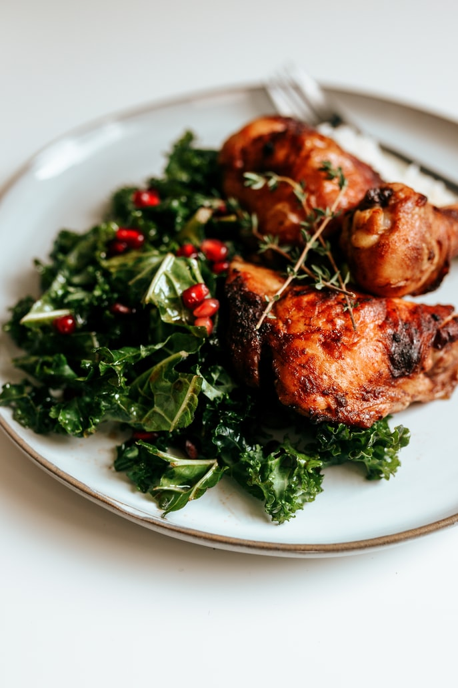

Home

Dark meat and is the lower part of the leg
Ingredients
1 tbsp groundnut oil
3 garlic cloves, chopped
2 tbsp grated fresh root ginger
1 tbsp Shaoxing rice wine or dry sherry (optional)
2 tbsp light soy sauce
2 tsp five-spice powder
2 tbsp honey
Steps
For the marinade, put all of the marinade ingredients into a large bowl and stir to combine. Add the chicken and allow to marinate while you preheat the oven to 200C/180C Fan/Gas 6.
Put the chicken drumsticks on a roasting tray and roast for 20-30 minutes, or until the skin is golden and the chicken is cooked through. (To check, pierce the drumstick at its thickest part, next to the bone. The juices should run clear.)